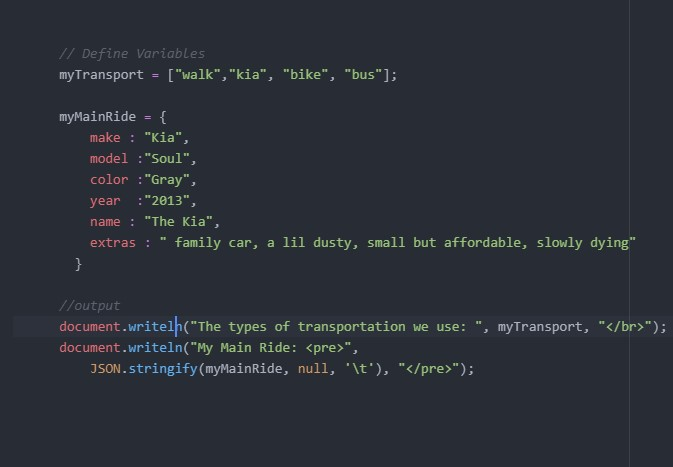
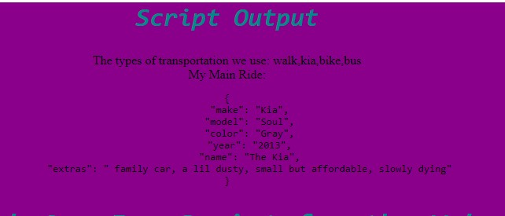
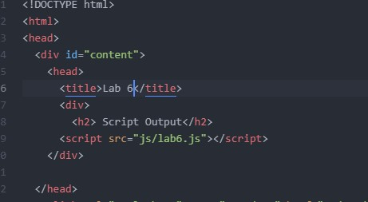

Lab 14 - Debugging Tools and Strategies
Prompt
This lab is to demonstrate how to solve problems in past assignments using new strategies and tools we learned in lecture.
Difficulties
We were happy that we were able to debug at least one of our labs. To be honest, we have struggled a good amount in this class because for both of us this is our first coding experience. It was frustrating that many things didn’t go planned or that we almost made everything work but there was always one thing that didn’t. We felt proud that we were able to do at least one and even if it was only one, we were able to get past it. We thought it was going to be easy to go back to an old lab to fix one mistake because of our new found knowledge but there was a reason why we struggled to begin with. It took surprisingly a long time to debug one thing but the fact we did it satisfies both of us.
Debugging
This is the debug for lab 3's JS.
This is the debug for lab 3's web.
This is the debug for lab 3's html.